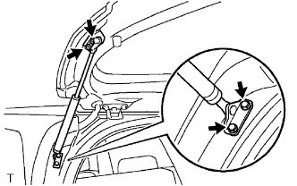

THANH CHỐNG CỬA HẬU > THÁO RA
Xem Phần Chuẩn Bị
Kích chuột vào đây
GỢI Ý:
Dùng các quy trình cho bên phải giống như quy trình cho bên trái.
Quy trình liệt kê sau đây là cho phía bên trái.
1. THÁO CỤM THANH CHỐNG CỬA HẬU BÊN TRÁI

Tháo 4 bu lông và thanh đỡ.
GỢI Ý:
Tháo thanh chống cửa trong khi đỡ cửa hậu bằng một tay.